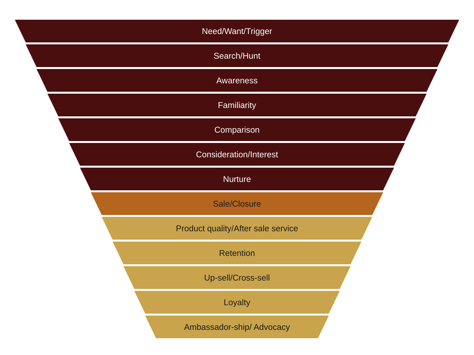

I’ve learnt marketing funnels differently, but most often than not- I’m asked to change the story
Change the story because people don’t understand it!
Funny, how people almost always jump into what marketing does and tries to influence the findings->insights->interpretation->campaign theme-> campaign line/copy
But are considered not educated when it comes to the marketing funnel
This is how I know the marketing funnel works

But the story told by most (almost all) marketeers are so short that it only helps the marketeers for some time
- To help achieve their KPIs
- To help build great looking decks
- To help them boast on LinkedIn about how they built beautiful looking campaigns
Mostly, the funnel only includes part of the full picture: Awareness, Consideration and then closure. Often skipping most crucial parts out.
How is a founder supposed to think 5-15 years in the future?
How are the rest of the stakeholders supposed to align their work with how you envision the future of the brand?
How are all touchpoints supposed to speak the same language?
How is a customer supposed to see his/her future- not just for today but for the rest of their lives?
The secret no marketeer wants to talk about or wants to be asked about is: will we be able to build a customer base that never leaves us? Never in their lifetime and even helps us be considered by the future generations?
If you know anything about the business world- you’d know about the 80:20 law.
20% of your loyal customers contribute to 80% of the business and help sustain your ambitions
And the other 80% customers may look big in number but they don’t stick
You might say, then why are marketeers not trying to turn small pieces of those in the 80% into the first 20%?
Easier said than done.
I’ve seen most of the new age startups build their pipeline almost entirely with performance ads and high CAC. I’m not saying it's bad or shouldn’t be done- it’s a very competitive market after all.
How else is a brand supposed to get recognized in all this clutter!
But again, why not build your foundation strong enough for those acquired by the performance campaigns to stick around even when you stop running those ads?
I’ve seen this more often that as soon as the Google Ads, Meta Ads and LinkedIn Ads stop. The revenue gets a major hit. Almost as if the brand is a newborn child.
Sometimes, the brands get hit by more than 90%
And this is the vicious cycle they keep opting for.
Raise funds, spend on marketing, make money, spend more on increasing revenue that the brand makes and then again raise funds as they’ve burnt a hole in their bank accounts.
Have we not learnt from what brands that are around for more than 40-50 years have been doing all this while?
Here’s an insider story
A brand was built somewhere around 1990- the founders first stretched the whole world learning and building meaningful relations. They were able to make roughly $10M in revenue by Year 8 and then went on to scale the company further.
By the year 2019- they’ve scaled their revenue to almost $600M and are thriving.
It's year 2020- the COVID has hit everyone and almost nobody is spending money on products and services like they used to.
This brand has to scale down drastically and lose almost 90% of their revenue in a matter of months.
But they have a handful of customers/clients- who keep buying, who keep supporting the business. Even when they don’t need to.
These are the clients that have been with the brand for almost 3 decades and now contribute almost 10% of the revenue. A handful of precious relationships built over decades and these are the same customers that continue to give more than $50M in revenue.
Nothing else. Just good old relationship and world class clarity in the founder's mind to keep these clients a priority above all. Tend to them personally and never let them down.
The secret spice. A secret spice no marketeer will ever talk about.
Let me tell you how my funnel actually looks with an example
First, by drawing a real target person for a fitness and wellness brand
Name: Gourab Das
Age: 45
Gender: Male
Geo: Tier-2 India
Occupation: Self-employed/ Business professional
Monthly disposable income: $500
Family: Nuclear (1 wife and 1 daughter)
Physical activity: Little to none. Doesn’t go to gym, walks barely 2K to 4K steps a day
Eating habits: Non-vegetarian diet for 5/7 days a week. Consumes roughly 3000Kcal a day
Habits: Smokes 4-6 cigarettes a day, drinks alcohol 1 day (roughly 180 ML) a week
- Need/Want/Trigger- Felt heavy in the heart and breathlessness one fine day and after spending 2 days with uneasiness, went to see a doctor. The doctor recommended a few tests + blood works and the findings said something like this. BP- Above average (High BP), Above average/normal Blood sugar (above 150 fasted, above 200 after meal, random nearly 200), High cholesterol & Low on few vitamins and minerals.
- Search/Hunt: Gourab asked the doctor after the tests for his guidance and the doctor recommended a few medicines and just told him to watch what he’s eating and exercise regularly. Nothing concrete really- but the doctor told him to meet a nutritionist/trainer and take better advice. He googled gyms and also spoke to a few gym trainers.
- Awareness: While googling, he stumbled upon online health and wellness apps like FITTR where he could get his objectives met. He also looked at a few other options which came in front of him like Elevate Now & Healthifyme
- Familiarity: He visited all of their websites, did some AI search as well and also asked a few questions online (Quora) and offline (friends and family)
- Comparison: After considering every source of information, he finalized that he’d check the price and compare. So he dropped enquiries in Elevate Now, downloaded FITTR and Healthifyme app and started exploring.
- Consideration: After looking at all the options, he liked what Elevate Now had to offer and also felt comfortable with their pricing, so he went ahead and scheduled a call with the consultant/doctor of Elevate Now to learn more (this already cost him $10 for the consultation)
- Nurture: The Elevate Now team started sending him various things on WhatsApp- a new free diet plan to begin, a few exercise videos to start at home and also regular (automated) messages to remind him to not smoke. Gourab felt reassured after more than a week of such nice messages and felt comfortable
- Sale: He committed with whatever the team (doctor+nutritionist+trainer) + (free health check plan every 3 month to measure progress) suggested and started with 1 year plan which will cost him $50 a month (after discount)
- After sales service: During his course, the doctor kept a proper follow up, the nutritionist not only gave him diet plan but also kept checking all of his meals and habits and the trainer not only prepared a plan but also helped him buy the right equipment to workout from home, help progressively improve his step counts and monitor his training sessions on video calls. While Gourab started to lose fat slowly, the same team also helped guide him with better lifestyle choices and in a single WhatsApp group, they all became his guardian angel and made it their mission to help Gourab overcome his health complications. As the program progressed, and Gourab kept a proper check on his health and also kept monitoring his blood markers, BP, Cholesterol etc, it helped Gourab learn everything about doing the right things to stay healthy. Gourab renewed the plan month after month for the entire duration of 12 months as he kept feeling better and his markers also came back to normal. He was also off the meds in a matter of 6 months after starting the program with Elevate Now.
- Retention: Once the 12 months plan was over, The Elevate Now team didn’t force him to keep the same plan, didn’t even pitch it- instead it suggested that he should now just pick a smaller plan where there’s a bit less supervision and less aiding. He picked a smaller package of $10 a month for another year after seeing the amazing result and this time he paid for the entire year in advance (that’s the power of a wonderful after sale service) which also brought his overall cost down to $100 for the year instead of $120 (bundling offer)
- Upsell/Cross Sell- Since Gourab was feeling really amazing, he enrolled his wife in one of the programs too and the Elevate Now team brought in friends and family offer which helped his wife also become the better version over the next months and it kept going strong.
- Loyalty: Gourab, his wife and now even their 15-year-old daughter were enrolled with Elevate Now with their respective plans and customized programs that were working really amazing and the family now was much more active, healthy and they all looked really younger to everyone (at least 10+ years younger- except the daughter of course who is now much stronger and agile for a 15 YO and is also active in various district and state level sports thanks to the lifestyle improvements). Which brings us to advocacy
- Advocacy: Looking at this amazing transformation, people around the family had already started asking them about it- Gourab would not shy away from bragging about how amazing Elevate Now is and how it all works. Following Gourab, his wife and their teenage daughter and their health, lifestyle and fitness- their relatives, friends and even long distance (social media only) people also started to get influenced and Gourab helped them all with his referral code- Altogether Gourab and his family referred more than 20 paying customers and influenced more than 500 people to sign up and/or follow Elevate Now on social media. And this kept going on and on
Now, THIS IS A GODDAMN REAL USER JOURNEY. Have you seen one like this before? I bet I missed a lot more details but this covers all the stages at least.
Maybe we will talk more in detail about how do we actually draw a real target audience profile/ Target person in another blog- but you’ll see a similar pattern- Marketeers don’t really open all their cards that easy- they keep them a secret- I don’t know for what!
Comments
Comments use GitHub. Sign in with a free GitHub account to join in.